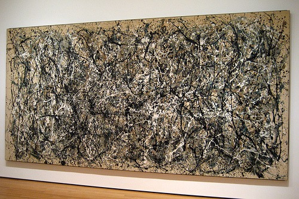

1
Auguste Rodin’s sculpture contains
both traditional and modernist
elements. Which of the following
could be described as modernist
innovations in Rodin’s The Gates of
Hell?
Choose one answer.
| a. Religious subject matter | ||
| b. References to Dante’s Inferno | ||
| c. The fragmentation and repetition of figural forms | ||
| d. Bronze casting | ||
| e. The use of plaster models |
Question 2
Impressionist artists focused on
certain themes. The subject matter
(content, story) of Impressionist
painting was limited to all of the
following except:
Choose one answer.
| a. industrialized landscapes. | ||
| b. cafes, restaurants, and dancing halls. | ||
| c. the city of Paris. | ||
| d. boating parties. | ||
| e. religion and mythology. |
Question 3
In 1863, the Salon rejected Edouard
Manet’s Luncheon on the Grass.
Which of the following statements
is true?
Choose one answer.
| a. Nudes were acceptable only when appearing in mythological or allegorical paintings. | ||
| b. The painting was rejected because the style was not realistic enough. | ||
| c. Nudes were completely banned since 1815. | ||
| d. The jury was upset, because Edouard Manet placed his own brother together with a nude, and that was considered an insult to the society. | ||
| e. The painting was too large to be hung in the Salon. |
Question 4
Japanese art had many
characteristics that appealed to
19th-century European artists.
Which of the following was not one
of these characteristics?
Choose one answer.
| a. Asymmetrical compositions | ||
| b. Sinuous, decorative lines | ||
| c. Bright, unmodulated colors | ||
| d. Battle scenes | ||
| e. Depiction of everyday life |
Question 5
Post-Impressionism differs most
from Impressionism in:
Choose one answer.
| a. its greater interest in scientific theories of color. | ||
| b. its contemporary subject matter. | ||
| c. its visible brushwork. | ||
| d. its bright colors | ||
| e. its origin in France. |
Question 6
The term “Impressionism” was coined
to describe a painting by which
artist?
Choose one answer.
| a. Claude Monet | ||
| b. Edgar Degas | ||
| c. Berthe Morisot | ||
| d. Mary Cassatt | ||
| e. Eduard Manet |
Question 7
The term “Modernism” refers to
which of the following?
Choose one answer.
| a. Art created in the last decade | ||
| b. Changes in Western societies in the late 19th and early 20th centuries | ||
| c. The Age of Enlightenment | ||
| d. Renaissance art | ||
| e. Fashion trends of the 1930s |
Question 8
Which of the following best
describes design features of the
Art Nouveau style?
Choose one answer.
| a. Art Nouveau artists placed a strong emphasis on clean straight lines. | ||
| b. Art Nouveau artists rejected ornamentation. | ||
| c. Art Nouveau style relied on geometric forms and saturated bright colors. | ||
| d. Art Nouveau artists preferred sinuous lines, nature-inspired curves, and rich ornamentation. | ||
| e. Art Nouveau style was limited to painting and architecture. |
Question 9
Which of the following female
artists was an Impressionist
painter?
Choose one answer.
| a. Elizabeth Vigee-Lebrun | ||
| b. Angelica Kauffmann | ||
| c. Berthe Morisot | ||
| d. Mary Cassatt | ||
| e. Both C and D |
Question 10
Which of the following is true of
Pointillism?
Choose one answer.
| a. The term is used to describe the technique according to which tiny dots of pure color are placed on the canvas and the viewer’s eye does the “mixing” and blending of colors. | ||
| b. Toulouse Lautrec is the founder of Pointillism. | ||
| c. Georges Seurat was interested in optical effects and developed Pointillism. | ||
| d. Both A and C | ||
| e. Both A and B |
Question 11
Which of the following techniques
does not accurately describe the
Impressionist painting style?
Choose one answer.
| a. Fragmentation of form | ||
| b. Plein air painting | ||
| c. The capture of the transient effect of sunlight | ||
| d. Short, thick brush strokes and free brushwork | ||
| e. Minimal use of black paint |
Question 12
Which Post-Impressionist artist
spent his most productive years in
Tahiti?
Choose one answer.
| a. Vincent van Gogh | ||
| b. Toulouse Lautrec | ||
| c. Paul Gauguin | ||
| d. Georges Seurat | ||
| e. Paul Cezanne |
Question 13
Which Post-Impressionist artist
suggested that the natural world
can be reduced to a sphere, a cone,
and a cylinder?
Choose one answer.
| a. Vincent van Gogh | ||
| b. Paul Cezanne | ||
| c. Paul Gauguin | ||
| d. Georges Seurat | ||
| e. Henri de Toulouse-Lautrec |
Question 14
Collage is a technique that
involves which of the following?
Choose one answer.
| a. Pasting lightweight materials or objects onto a flat surface | ||
| b. Fastening together heavy objects, such as pipes and rods | ||
| c. Applying a very thick layer of paint to canvas to get a textured painting surface | ||
| d. Covering the canvas with layers of transparent glaze | ||
| e. Placing pieces of stained glass into an iron frame |
Question 15
In his essay, “Modern Painting,”
Guillaume Apollinaire states which
of the following?
Choose one answer.
| a. In modern painting, verisimilitude no longer has importance. | ||
| b. In modern painting, the subject is very important. | ||
| c. In modern painting, the aim of painting is to give pleasure to the eye. | ||
| d. In modern painting, the titles reflect the narrative. | ||
| e. Both A and C |
Question 16
Pablo Picasso’s 1907 Les
Demoiselles d’Avignon:
Choose one answer.
| a. shows the influence of African art in the depiction of the female figures. | ||
| b. was inspired by a trip Picasso took to Africa in 1906. | ||
| c. illustrates the influence of Vincent van Gogh’s brushstrokes. | ||
| d. is considered an exemplar of Picasso’s Blue period. | ||
| e. marks Picasso’s transition from Analytic to Synthetic Cubism. |
Question 17
Which of the following does not
accurately describe Analytic
Cubism?
Choose one answer.
| a. Paintings appear almost monochromatic. | ||
| b. The color palette is limited to browns, ocher, grays, and blacks. | ||
| c. The subject matter is limited to still lifes, portraits, and musical instruments. | ||
| d. Text never appears on the canvas. | ||
| e. There is fragmentation of form and a series of overlapping planes. |
Question 18
Which of the following statements
about Analytic Cubism is false?
Choose one answer.
| a. It emphasizes the flatness of canvas. | ||
| b. It reduces and fragments objects and forms into geometric shapes. | ||
| c. It is also called “hermetic.” | ||
| d. It was created by Pablo Picasso alone. | ||
| e. It predates Synthetic Cubism. |
Question 19
Which of the following statements
about Cubism is/are most accurate?
Choose one answer.
| a. Cubism was founded by Pablo Picasso and Georges Braque. | ||
| b. Cubism was inspired by the art of Paul Cézanne and African art. | ||
| c. Cubism was inspired by Impressionism. | ||
| d. Both A and B | ||
| e. Both A and C |
Question 20
Which of the following statements
about Fauvism is false?
Choose one answer.
| a. Fauvism was influenced by the painting techniques and color theories of Georges Seurat and Paul Signac. | ||
| b. Fauve artists were interested in the decorative abstraction of African artifacts. | ||
| c. Fauvists often used paint directly from the tube without mixing and preparing colors. | ||
| d. Fauve artists used strong, undisguised brushstrokes. | ||
| e. The founder and leader of Fauves was Maurice de Vlaminck. |
Question 21
Which of the following statements
about Synthetic Cubism is false?
Choose one answer.
| a. The technique of collage was introduced. | ||
| b. The technique of papier collé was created. | ||
| c. Fragments of real newspaper, cardboard, or playing cards were used for paintings. | ||
| d. Synthetic Cubism is less colorful than Analytic Cubism. | ||
| e. Synthetic Cubism is more colorful than Analytic Cubism. |
Question 22
Which of the statements below
concerning the influence of African
art on Cubism and Fauvism is false?
Choose one answer.
| a. Cubists and Fauvists were attracted to the formal qualities of African art but knew little about the cultural contexts in which African objects were produced. | ||
| b. Cubists and Fauvists carefully studied the original uses of African objects in order to understand the meanings these objects had for their original, African users. | ||
| c. Cubists and Fauvists were attracted to African art’s deformation of form for expressive purposes. | ||
| d. The abstraction Cubists and Fauvists found in African art validated their own move to abstract form. | ||
| e. European colonialism made African objects accessible to artists in France. |
Question 23
Nonfigurative painting differs from
figurative painting, because
nonfigurative painting:
Choose one answer.
| a. contains only anonymous, not named, individuals. | ||
| b. contains recognizable objects but no human figures. | ||
| c. refers only to geometric forms. | ||
| d. contains no recognizable depictions of any referent in the real world. | ||
| e. was practiced only in Russia in the early 20th century. |
Question 24
Which artist was the first to
completely reject figurative
imagery and any references to the
natural world and painted the first
modern abstract work?
Choose one answer.
| a. Pablo Picasso | ||
| b. Henry Matisse | ||
| c. Wassily Kandinsky | ||
| d. Franz Marc | ||
| e. Umberto Boccioni |
Question 25
Which of the following statements
about Constantin Brancusi’s The
Kiss of 1916 is false?
Choose one answer.
| a. The sculpture depicts a homosexual embrace. | ||
| b. The fusion of the male and female figures suggests the unifying power of love. | ||
| c. The reduction to the essential forms is a hallmark of Brancusi’s mature work. | ||
| d. The abstraction emphases the universality of the theme of love. | ||
| e. The rough surface of the stone block suggests premodern works of art. |
Question 26
Which of the following statements
about Der Blaue Reiter is false?
Choose one answer.
| a. Der Blaue Reiter organized an exhibition that included works of premodern Western art, folk art, non-Western art, and the art of children, as well as works by contemporary European artists. | ||
| b. The group revolved around Wassily Kandinsky and Franz Marc. | ||
| c. The group was created as a response to the rejection of Kandinsky’s painting from an exhibition. | ||
| d. The group worked closely with the Die Brücke group in Dresden. | ||
| e. The name of the group had spiritual implications for Kandinsky. |
Question 27
Which of the following statements
about Futurism is false?
Choose one answer.
| a. Futurism emerged in Italy as an artistic and literary movement. | ||
| b. The leader of Italian Futurists was Filippo Tommaso Marinetti. | ||
| c. “The Futurist Manifesto” was first published in 1909. | ||
| d. Futurism was an isolated Italian phenomenon. | ||
| e. Italian Futurists were nationalists. |
Question 28
Which of the following statements
about Giacomo Balla’s Dynamism of a
Dog on a Leash, an oil painting of
1912, is false?
Choose one answer.
| a. The subject matter shows that Balla was more interested in animals than in human beings. | ||
| b. Balla used lines of force, blurring, and the repetition of forms to convey the idea of movement in space. | ||
| c. Balla’s painting is similar to the photographs of Eadweard Muybridge in its attempt to convey speed and motion. | ||
| d. The painting shows that Balla, like F. T. Marinetti, equated modernity with movement. | ||
| e. The painting focuses only on the dog and the feet of its human owner in order to emphasize dynamic motion itself. |
Question 29
Which of the following statements
about Italian Futurists and
manifestos is false?
Choose one answer.
| a. Italian Futurists wrote only one main manifesto. | ||
| b. Antonio Sant’Elia wrote the “Manifesto of Futurist Architecture.” | ||
| c. Italian Futurists wrote a number of manifestos. | ||
| d. Umberto Boccioni authored “The Technical Manifesto of Futurist Sculpture.” | ||
| e. “Manifesto of Futurist Musicians” was written in 1910. |
Question 30
Which of the following statements
about the art of Die Brücke group
is false?
Choose one answer.
| a. Their paintings and woodcuts emphasized subjectivity over objectivity. | ||
| b. They expressively distorted the figures in their composition to convey psychological states. | ||
| c. Their works often express anxiety caused by the rapid social changes and increasing urbanization of modern life. | ||
| d. Many of their works illustrate their interest in premodern German styles or the art of non-Western societies. | ||
| e. Their art usually conveys the harmony and beauty of everyday contemporary life. |
Question 31
Which of the following statements
about the Italian Futurists is
false?
Choose one answer.
| a. They admired speed and praised war and violence. | ||
| b. They admired the industrial city and the machine. | ||
| c. They dismissed art critics. | ||
| d. They rejected art of the past. | ||
| e. They found models for their art in the specifically Italian art of the Renaissance and ancient Romans. |
Question 32
Which of the following statements
about Wassily Kandinsky is false?
Choose one answer.
| a. Kandinsky was influenced by Theosophy and teachings of Helena Blavatsky. | ||
| b. Kandinsky authored a theoretical treatise titled “Concerning the Spiritual in Art.” | ||
| c. Kandinsky was fascinated by Russian folk art and religious architecture. | ||
| d. Kandinsky was fascinated with color symbolism. | ||
| e. Kandinsky was a member of the Die Brücke group. |
Question 33
Which of the following statements
does not accurately describe
Umberto Boccioni’s Unique Forms of
Continuity in Space, a bronze
sculpture of 1913 (pictured below)?

Choose one answer.
| a. The human form has been reduced to the essential elements necessary to convey the notion of dynamic movement. | ||
| b. The sculpture portrays modern man as an anonymous and machine-like exemplar of speed and forward motion. | ||
| c. The sculpture shows the influence of Cubism’s abstraction and fragmentation of form. | ||
| d. The sculpture is larger than life size in order to show the supremacy of modern man. | ||
| e. Boccioni used a very traditional material to portray a modern theme. |
Question 34
Constructivists operated with which
of the following notions?
Choose one answer.
| a. Factura | ||
| b. Tectonic | ||
| c. Chiaroscuro | ||
| d. Sfumato | ||
| e. Both A and B |
Question 35
Constructivists saw which of the
following as their task?
Choose one answer.
| a. Bringing fine arts to Russian provinces | ||
| b. Reviving Russian folk arts | ||
| c. Investigating the properties of various materials and finding the forms and techniques appropriate to each material | ||
| d. Conveying Communism’s egalitarian ideology through the formal elements of a work of art | ||
| e. Both C and D |
Question 36
Kazimir Malevich did all of the
following except:
Choose one answer.
| a. he launched Suprematism in 1915, at the “0,10 Last Futurist Exhibition.” | ||
| b. he designed backdrops and costumes for the Futurist opera, “Victory over the Sun,” staged in December 1913 in St. Petersburg. | ||
| c. he experimented with Cubist and Futurist styles. | ||
| d. he denied that his works had any spiritual or transcendental meanings. | ||
| e. he attributed spiritual and transcendental meanings to his Suprematist works. |
Question 37
The artists associated with
Suprematism, Constructivism, and De
Stijl all had utopian goals for
their art. Which of the following
statements best describes their
utopian goals?
Choose one answer.
| a. Proceeds from the sale of their works would be donated to feed the poor. | ||
| b. The formal elements of art would change a viewer’s perception of the world and therefore improve human life. | ||
| c. The works suggest that a better life awaits human beings after death. | ||
| d. The art would provide a beautiful escape from the realities of modern life. | ||
| e. The works had clearly recognizable antiwar themes. |
Question 38
Which of the following statements
about Cubo-Futurism is false?
Choose one answer.
| a. It is a fusion of French Cubism and Italian Futurism. | ||
| b. It is a uniquely Russian modernist style. | ||
| c. It combines Cubist fragmentation of form with Futurist representation of movement. | ||
| d. Natalia Goncharova was one of the finest Russian Cubo-Futurist artists. | ||
| e. Wassily Kandinsky was the leader of Russian Cubo-Futurists. |
Question 39
Which of the following statements
about De Stijl is/are true?
Choose one answer.
| a. De Stijl was also known as neoplasticism. | ||
| b. De Stijl was a Dutch artistic movement. | ||
| c. De Stijl was concerned only with architecture. | ||
| d. Both A and C | ||
| e. Both A and B |
Question 40
Which of the following statements
about Piet Mondrian’s paintings is
false?
Choose one answer.
| a. Horizontal and vertical lines are meant to suggest the balance between all possible oppositions, such as life/death, material/spiritual, male/female, and so forth | ||
| b. Mondrian’s mature paintings use only the primary colors and black and white. | ||
| c. Mondrian’s paintings were meant to convey his Theosophical ideas about spirituality. | ||
| d. The paint application simultaneously emphasizes the two-dimensionality of the picture plane and the three-dimensionality of the painted canvas. | ||
| e. Mondrian’s paintings emphasize the reality of the material world and deny the possibility of spiritual transcendence. |
Question 41
“I have transformed myself in the
zero of form and dragged myself out
of the rubbish-filled pool of
Academic art.” Where is this quote
from?
Choose one answer.
| a. Marinetti’s “The Futurist Manifesto” of 1909 | ||
| b. Apollinaire’s “Modern Painting” of 1912 | ||
| c. Malevich’s “From Cubism and Futurism to Suprematism” of 1915 | ||
| d. Breton’s “Manifesto of Surrealism” of 1924 | ||
| e. Larionov’s “Rayonism” of 1913 |
Question 42
Dada and Surrealist artists used
nonart materials in many of their
works for all of the following
reasons except:
Choose one answer.
| a. to break down the barriers between high art and everyday life. | ||
| b. to save money by avoiding expensive, artistic materials. | ||
| c. to shock their bourgeois audiences by using unexpected materials. | ||
| d. to show that the surreal could be found in everyday life and objects. | ||
| e. to incorporate the notion of chance in their use of materials and processes. |
Question 43
Dadaist artists used all of the
following except:
Choose one answer.
| a. collage. | ||
| b. assemblage. | ||
| c. readymades. | ||
| d. chiaroscuro. | ||
| e. photomontage. |
Question 44
Theories of which of the following
psychologists had an impact on
Surrealist artists?
Choose one answer.
| a. John Dewey | ||
| b. Harvey Carr | ||
| c. Sigmund Freud | ||
| d. Carl Jung | ||
| e. Wilhelm Wundt |
Question 45
What did Andre Breton celebrate in
his “Surrealist Manifesto?”
Choose one answer.
| a. The marvelous | ||
| b. War and destruction | ||
| c. Traditional, naturalistic painting and sculpture | ||
| d. The world of the imagination and dreams | ||
| e. Both A and D |
Question 46
Which of the following is an
example of a readymade?
Choose one answer.
| a. Raoul Haussmann’s “ABCD” | ||
| b. Marcel Duchamp’s “Fountain” | ||
| c. Hannah Hoch’s “Cut with the Dada Kitchen Knife” | ||
| d. Kurt Schwitter’s “Merzbau” | ||
| e. John Heartfield’s “Adolph the Superman” |
Question 47
Which of the following statements
about Marcel Duchamp’s “readymades”
is false?
Choose one answer.
| a. They suggest that art is a culturally determined and therefore mutable category rather than a fixed and eternal essence. | ||
| b. They prove that any object can be beautiful if we take the time to look at it carefully. | ||
| c. They emphasize the artist’s act of selecting an object rather than the act of making one. | ||
| d. They break down the barrier between the fine arts and all other types of human production. | ||
| e. They greatly influenced the work of several Neo-Dada and Pop artists. |
Question 48
Which of the following statements
about Marcel Duchamp’s Nude
Descending a Staircase is false?
Choose one answer.
| a. It was displayed at the armory show in 1913. | ||
| b. It fuses Cubist and Futurist features. | ||
| c. Its palette is relatively monochromatic. | ||
| d. It is an example of nonfigurative art. | ||
| e. The painting was rejected at the “Salon des Independents.” |
Question 49
Which of the following statements
about the Dada movement is false?
Choose one answer.
| a. Dada was an international movement based on a philosophy of negation. | ||
| b. Dada works emphasize spirituality and transcendence. | ||
| c. Dada artists blamed bourgeois culture for the devastation of World War I. | ||
| d. Dada was a protest against bourgeois nationalism and colonialism. | ||
| e. Dada was considered “anti-art.” |
Question 50
The paintings of Edward Hopper are
characterized by which of the
following:
Choose one answer.
| a. Solitude, melancholy, and alienation | ||
| b. Energy, dynamism, and speed | ||
| c. Rationality, harmony, and order | ||
| d. Humor and folk tales | ||
| e. War and natural disaster |
Question 51
What was the significance of the
1913 Armory Show?
Choose one answer.
| a. It proved that American artists were more daring and innovative than their European counterparts. | ||
| b. It inspired American artists to experiment more boldly with abstraction and nonnaturalistic colors and forms. | ||
| c. It was the first international exhibition of art ever held. | ||
| d. It encouraged numerous American artists to study art in Paris. | ||
| e. It displayed the art of children, the insane, and the homeless along with that of artists. |
Question 52
What were the educational goals of
the Bauhaus?
Choose one answer.
| a. To train students in all the visual arts and prepare them to produce objects for industrial production | ||
| b. To teach Old Master painting and sculptural techniques | ||
| c. To produce handmade works that could compete with those made by machine | ||
| d. To train only architects and industrial designers | ||
| e. To train artists in textiles, ceramics, and graphic design |
Question 53
Which of the following did not have
a profound influence on the art of
France, Germany, and Russia in the
1920s and 1930s?:
Choose one answer.
| a. Nationalism | ||
| b. Industrial production | ||
| c. The destruction of World War I | ||
| d. New technologies | ||
| e. Traditional folklore tales |
Question 54
Which of the following movements
emphasized nationalistic subject
matter portrayed in a folksy,
naturalistic style?
Choose one answer.
| a. Purism | ||
| b. Urban Realism | ||
| c. Regionalism | ||
| d. The New Objectivity | ||
| e. The Bauhaus |
Question 55
Which of the following was not
characteristic of Purism in France?
Choose one answer.
| a. It was influenced by technology and machine production. | ||
| b. It valued legibility and rational order. | ||
| c. Classical harmony and balance were highly valued. | ||
| d. It emphasized dynamic speed and change. | ||
| e. It was a reaction to the chaos of World War I. |
Question 56
Which of the following artists was
inspired by mythology?
Choose one answer.
| a. Franz Kline | ||
| b. Mark Rothko | ||
| c. Willem de Kooning | ||
| d. Ad Reinhardt | ||
| e. Jackson Pollock |
Question 57
Which of the following is not one
of the reasons that New York became
the new center for art after World
War II?
Choose one answer.
| a. Numerous European modernists fled to the United States during and after the war. | ||
| b. The United States emerged from the war as a global political power. | ||
| c. New York had the best art schools in the world. | ||
| d. Europe was economically devastated by the war. | ||
| e. The United States had the most prosperous economy after the war. |
Question 58
Which of the following statements
about Clement Greenberg’s essay,
“Avant-Garde and Kitsch,” is false?
Choose one answer.
| a. Greenberg argued that only the formal elements of a work of art had importance. | ||
| b. Greenberg defined “kitsch” as easily recognizable subject matter painted in a naturalistic style that required no thought on the part of the viewer. | ||
| c. Greenberg claimed that art no longer had relevance or value for modern society. | ||
| d. Greenberg argued that avant-garde art kept culture moving. | ||
| e. Greenberg believed that abstract, avant-garde art served a political purpose although it had no political subject matter. |
Question 59
Which of the following statements
about Jackson Pollock’s paintings
is false?
Choose one answer.
| a. His best known works are characterized by drips, pours, and splashes of paint. | ||
| b. His works were used by the United States government to promote American Liberalism. | ||
| c. His paintings are characterized by an allover format that seems to continue past the edges of the canvas. | ||
| d. His paintings emphasize process and evoke ideas of spontaneity and authenticity. | ||
| e. His works were directly inspired by German Expressionist paintings of the 1910s. |
Question 60
Which of the following statements
is/are true of “action painting”?
Choose one answer.
| a. Harold Rosenberg coined the term in 1952. | ||
| b. It is also called “gesture painting.” | ||
| c. Mark Rothko worked in this style. | ||
| d. Both A and C | ||
| e. Both A and B |
Question 61
Who created the painting below?

Choose one answer.
| a. Mark Rothko | ||
| b. Willim de Kooning | ||
| c. Clyfford Still | ||
| d. Jackson Pollock | ||
| e. Franz Kline |
Question 62
Marilyn Monroe, Elvis Presley, and
Elizabeth Taylor appear in whose
works?
Choose one answer.
| a. Jackson Pollock’s | ||
| b. Andy Warhol’s | ||
| c. Roy Lichtenstein’s | ||
| d. Willem de Kooning’s | ||
| e. Gustav Klimt’s |
Question 63
What is the significance of the
Ben-Day dots in Roy Lichtenstein’s
work?
Choose one answer.
| a. They made it easy for Lichtenstein’s assistants to silkscreen the work. | ||
| b. They refer to the mechanically reproduced comics that were the source of Lichtenstein’s subject matter. | ||
| c. They remove the hand of the artist and deny personal expressivity. | ||
| d. They made it easier for Lichtenstein to produce works quickly and cheaply. | ||
| e. Both B and C |
Question 64
Which earlier 20th-century artist
had the most influence on Neo-Dada
and Pop Art of the 1950s and 1960s?
Choose one answer.
| a. Marcel Duchamp | ||
| b. Hannah Hoch | ||
| c. Pablo Picasso | ||
| d. Wassily Kandinsky | ||
| e. George Grosz |
Question 65
Which of the following statements
about Claes Oldenburg is false?
Choose one answer.
| a. Oldenburg is a Swedish sculptor. | ||
| b. Oldenburg makes oversized sculptures of everyday objects. | ||
| c. Oldenburg makes soft sculptures of everyday objects. | ||
| d. Oldenburg wrapped buildings and bridges in various materials | ||
| e. Oldenburg is generally associated with Pop Art |
Question 66
Which of the following statements
about Pop Art is false?
Choose one answer.
| a. It emerged as a reaction against Abstract Expressionism. | ||
| b. It emerged in Great Britain. | ||
| c. It attempted to continue the heroic themes found in Abstract Expressionism. | ||
| d. It displays similarities with Dada Art. | ||
| e. It displays the influence of mass culture and advertisements. |
Question 67
Which of the following statements
characterizes Pop Art’s
relationship to consumer culture?
Choose one answer.
| a. It is often hard to determine if the works celebrate, critique, or accept consumer culture. | ||
| b. Pop Art uncritically celebrates everything about consumer culture. | ||
| c. Pop Art brought the world of consumer culture into art museums. | ||
| d. Both A and C | ||
| e. Both B and C |
Question 68
Donald Judd’s works evoke ideas of
industrial fabrication through all
of the following except:
Choose one answer.
| a. the serial repetition of forms. | ||
| b. the use of industrial materials. | ||
| c. the use of strictly geometric forms. | ||
| d. the use of unpainted surfaces or monochromatic colors. | ||
| e. the lack of titles for the works. |
Question 69
How does Clement Greenberg define
modernist painting in his essay,
“Modernist Painting”?
Choose one answer.
| a. It is a complete and absolute break with all the art of the past. | ||
| b. It is like kitsch in its use of recognizable subject matter and naturalistic style. | ||
| c. It emphasizes the tension between the fact of the picture’s two-dimensional surface and the illusion of three-dimensional space. | ||
| d. It emphasizes the absolute flatness of the picture plane with no illusion of three-dimensional space. | ||
| e. It includes techniques borrowed from the other visual arts. |
Question 70
Robert Morris produced work that
was associated with all of the
following movements except:
Choose one answer.
| a. Process Art | ||
| b. Minimalism | ||
| c. Land Art | ||
| d. Performance Art | ||
| e. Arte Povera |
Question 71
Which of the following artists was
associated with Arte Povera?
Choose one answer.
| a. Alighiero Boetti | ||
| b. Donald Judd | ||
| c. Eva Hesse | ||
| d. Robert Morris | ||
| e. Joseph Beuys |
Question 72
Which of the following is not one
of the characteristics of
Minimalism?
Choose one answer.
| a. Geometric form | ||
| b. Curvilinear lines | ||
| c. Industrial materials | ||
| d. Serial repetition | ||
| e. Industrial fabrication |
Question 73
Which of the following statements
best describes the sculpture of Eva
Hesse?
Choose one answer.
| a. Her nontraditional materials and processes evoke organic qualities and suggest the absurdity of life. | ||
| b. Her rigidly geometric forms imply order and stasis, | ||
| c. Her large abstract works are made of durable materials that are impervious to time. | ||
| d. Her sculptures were designed to be used in performances by herself and other artists. | ||
| e. She used only found objects and organic materials to construct her sculptures. |
Question 74
Which of the following statements
describing Joseph Beuys’s “I Like
America and America Likes Me” is
false?
Choose one answer.
| a. It contains elements found in Happenings and in Performance Art. | ||
| b. It was performed numerous times in many American cities. | ||
| c. It experiments with the boundary between human and animal. | ||
| d. It has a pointed political message. | ||
| e. It reflects his interest in the spirituality of animals. |
Question 75
Which artist was also a major
theorist of Land Art?
Choose one answer.
| a. Nancy Holt | ||
| b. Michael Heizer | ||
| c. Sol LeWitt | ||
| d. Joseph Kosuth | ||
| e. Robert Smithson |
Question 76
Which of the following statements
about Conceptual Art is/are
accurate?
Choose one answer.
| a. Conceptual art privileges the idea of a work over its execution. | ||
| b. The artist conceives the idea for a work but the execution of it may be performed by others. | ||
| c. The works are always impermanent and executed on a large scale. | ||
| d. A and B | ||
| e. B and C |
Question 77
Which of the following statements
about Installation Art is false?
Choose one answer.
| a. Installation Art can only be found in museums specifically built for that purpose. | ||
| b. Installation Art may use both traditional and nontraditional artistic materials. | ||
| c. Installation Art often appeals to many of all of the senses, not just the visual. | ||
| d. Installation Art may be found in public and private spaces as well as museums and galleries. | ||
| e. Installation Art modifies the traditional relationship between the work of art and the viewer. |
Question 78
Which of the following statements
about Land Art is false?
Choose one answer.
| a. Many works of Land Art use materials found at the site in which they are constructed. | ||
| b. Some Land Art is created with industrial materials and processes as well as local organic materials. | ||
| c. Michael Heizer, Nancy Holt, Robert Smithson, and Robert Morris produced works characterized as Land Art. | ||
| d. Most works of Land Art refer to specific premodern monuments created by the ancient Egyptians. | ||
| e. Most works of Land Art are subject to the depredations of time and weather because they are located outdoors. |
Question 79
Which of the following statements
about the work of Christo and
Jeanne-Claude is false?
Choose one answer.
| a. The artists “wrapped” bridges, buildings, and islands in various materials. | ||
| b. Their works focus attention on the social and political structures in which art operates. | ||
| c. Their works remain at the site and alter it permanently. | ||
| d. Their works are ephemeral and are dismantled after a specified period of time. | ||
| e. The artists completely fund their works themselves and never accept grants from any source. |
Question 80
Who wrote “Paragraphs on Conceptual
Art?”
Choose one answer.
| a. Sol LeWitt | ||
| b. Joseph Kosuth | ||
| c. Robert Smithson | ||
| d. Joseph Beuys | ||
| e. Eva Hesse |
Question 81
Which of the following is not a
postmodernist characteristic of
Cindy Sherman’s “Film Still”
series?
Choose one answer.
| a. Sherman is both the artist and the subject of her photographs. | ||
| b. Sherman appropriates imagery from popular culture in her art. | ||
| c. Sherman used photography to produce these works, and photography is always postmodernist. | ||
| d. Sherman critiques media representations of women. | ||
| e. Sherman suggests that gender and identity are culturally rather than biologically determined entities. |
Question 82
Which of the following statements
about postmodernism is false?
Choose one answer.
| a. Postmodernism privileges the copy over the original. | ||
| b. Postmodernism emphasizes plurality and heterogeneity. | ||
| c. The artists considered postmodernist only produce abstract works in nontraditional materials. | ||
| d. Deconstructive postmodernism rejects all of modernism’s values completely while constructive postmodernism attempts to revise modernism’s goals. | ||
| e. Postmodernism challenges the hierarchy that places the fine arts above all other forms of human production. |
Question 83
Which of the following statements
about Sherrie Levine’s
appropriation of the work of
earlier male artists is false?
Choose one answer.
| a. Levine’s work suggests that there is no such thing as true originality. | ||
| b. Levine’s work critiques an art culture that privileges the work of men over that of women. | ||
| c. Levine’s work highlights the impact of photographic reproduction on the visual arts. | ||
| d. Levine’s work was inspired by the work of Cindy Sherman. | ||
| e. Levine’s work comments on copying as a traditional artistic training practice. |
Question 84
Which of the following values is
not associated with modernism?
Choose one answer.
| a. Originality | ||
| b. Authenticity | ||
| c. Purity | ||
| d. Individuality | ||
| e. Plurality |
Question 85
Laurie Anderson is best known for
which type of art?
Choose one answer.
| a. Performance | ||
| b. Minimalism | ||
| c. Process Art | ||
| d. Arte Povera | ||
| e. Land Art |
Question 86
Which of the following
characteristics do Installation Art
and Performance Art share?
Choose one answer.
| a. Both often incorporate multisensory experiences. | ||
| b. Both may use nontraditional venues and may modify the relationship between the viewer and the work of art. | ||
| c. Both always have specific political messages. | ||
| d. Both A and B | ||
| e. Both B and C |
Question 87
Which of the following is
characteristic of both traditional
theater and Performance Art?
Choose one answer.
| a. The use of live performers | ||
| b. A recognizable plot or narrative | ||
| c. The use of traditional theatrical spaces | ||
| d. Clear boundaries between performers and audience | ||
| e. Meanings conveyed through spoken dialogue alone |
Question 88
Which of the following statements
about Vito Acconci’s Following
Piece is false?
Choose one answer.
| a. It highlights the social boundaries between public and private spaces. | ||
| b. It breaks down the barriers between art and everyday life. | ||
| c. It incorporates real time and space in a work of art. | ||
| d. It makes the lives of ordinary people seem heroic and worthy of attention. | ||
| e. It ended only when the people Acconci followed entered private spaces. |
Question 89
What does the art of Romare Bearden
have in common with that of Pablo
Picasso and Hannah Hoch?
Choose one answer.
| a. The technique of collage | ||
| b. The use of monochromatic colors | ||
| c. The use of assistants to execute the work | ||
| d. The avoidance of political meanings | ||
| e. Nothing |
Question 90
Which of the following
characteristics of Faith Ringgold’s
quilts would be considered
specifically feminist?
Choose one answer.
| a. The use of textiles and quilting techniques | ||
| b. The incorporation of narrative | ||
| c. The depiction of the human figure | ||
| d. The use of texts as well as visual imagery | ||
| e. The use of primary colors |
Question 91
Which of the following does not
contribute to the political
meanings of Judy Chicago’s The
Dinner Party.
Choose one answer.
| a. Chicago collaborated with other women artists to produce this work. | ||
| b. The work incorporates ceramics and textiles, materials traditionally associated with women. | ||
| c. The work celebrates the achievements of women in various areas and numerous historical periods. | ||
| d. All of the materials used were handmade instead of machine made. | ||
| e. The dinner party theme emphasizes and critiques the primarily domestic role assigned to women by contemporary society. |
Question 92
Which of the following statements
about Betye Saar’s The Liberation
of Aunt Jemima is false?
Choose one answer.
| a. It challenges viewers to reconsider their own racial prejudices when they encounter derogatory stereotypes. | ||
| b. It questions racial and gender stereotypes. | ||
| c. It highlights the relationship between consumer culture and racial stereotypes. | ||
| d. It is similar to Pop Art in its appropriation of advertising imagery. | ||
| e. It shows that racial tensions in the United States are a thing of the past. |
Question 93
Which of the following statements
about Barbara Kruger’s use of text
in her work is false?
Choose one answer.
| a. Kruger’s text clearly indicates who is speaking and to whom the words are addressed. | ||
| b. Kruger’s use of text was influenced by her work experience with Condé Nast publications. | ||
| c. Kruger often uses “shifting” pronouns that make it hard to determine who is speaking and to whom. | ||
| d. Kruger used text in her works on paper, in her installations, on objects, and on billboards. | ||
| e. Kruger’s text often critiques contemporary politics or prejudices. |
Question 94
Which of the following statements
does not describe the art of Andy
Warhol and Jeff Koons?
Choose one answer.
| a. The works often use the icons of popular culture as subject matter. | ||
| b. The works are often partially or completely fabricated by assistants. | ||
| c. It can be difficult to tell if the works celebrate or criticize consumer culture. | ||
| d. Some of the works use or allude to industrial methods of production. | ||
| e. The works unconditionally celebrate consumer culture. |
Question 95
Who created the “Truisms” series of
works?
Choose one answer.
| a. Barbara Kruger | ||
| b. Jenny Holzer | ||
| c. Allan McCollum | ||
| d. Jeff Koons | ||
| e. Damien Hirst |
Question 96
Which artist coined the term
“superflat” to describe his/her
work?
Choose one answer.
| a. Damien Hirst | ||
| b. Cai Guo-Qiang | ||
| c. Barbara Kruger | ||
| d. Takashi Murakami | ||
| e. Andy Warhol |
Question 97
Which contemporary artist is known
for works produced with gunpowder?
Choose one answer.
| a. Takashi Murakami | ||
| b. Gerhard Richter | ||
| c. Cai Guo-Qiang | ||
| d. Damien Hirst | ||
| e. Georg Baselitz |
Question 98
Which of the following is not a
reason for the shift from a Western
to a more global perspective in
contemporary art?
Choose one answer.
| a. There are now more museums and galleries in Africa and Asia than in Europe and the United States. | ||
| b. The number of international contemporary art fairs has greatly increased. | ||
| c. The growth of the Internet and personal websites makes it easier for all artists to gain attention regardless of his or her geographic location. | ||
| d. National economies are increasingly linked to and dependent upon a global market economy. | ||
| e. Postmodernism’s emphasis on plurality and cultural relativity has made Western art centers more open to the art produced in non-Western cultures. |
Question 99
Which of the following statements
about Anselm Kiefer’s work is
false?
Choose one answer.
| a. Kiefer’s subject matter has focused primarily on German history and culture. | ||
| b. Kiefer has produced artist’s books as well as paintings. | ||
| c. Kiefer’s “Occupations” is a series of photographic self-portraits. | ||
| d. Kiefer’s references to Germany’s national socialist history have been more controversial in the United States, England, and France than in Germany. | ||
| e. Several of Kiefer’s paintings show the influence of 19th-century German Romanticism. |
Question 100
Which of the following statements
about Damien Hirst’s “For the Love
of God” is false?
Choose one answer.
| a. The title was inspired by a comment from the artist’s mother. | ||
| b. The work comments on the way monetary value is assigned to all works of art. | ||
| c. The work consists of a human skull encrusted with diamonds. | ||
| d. The work refers to the tradition of “memento mori” in earlier still life painting. | ||
| e. The work is considered an icon of British Pop Art. |